SpaceX · 14 November 2026 · 3:21 pm Central
Mechazilla catches Starship!
Mechazilla catches Starship! Congratulations to the entire SpaceX team on this incredible achievement!
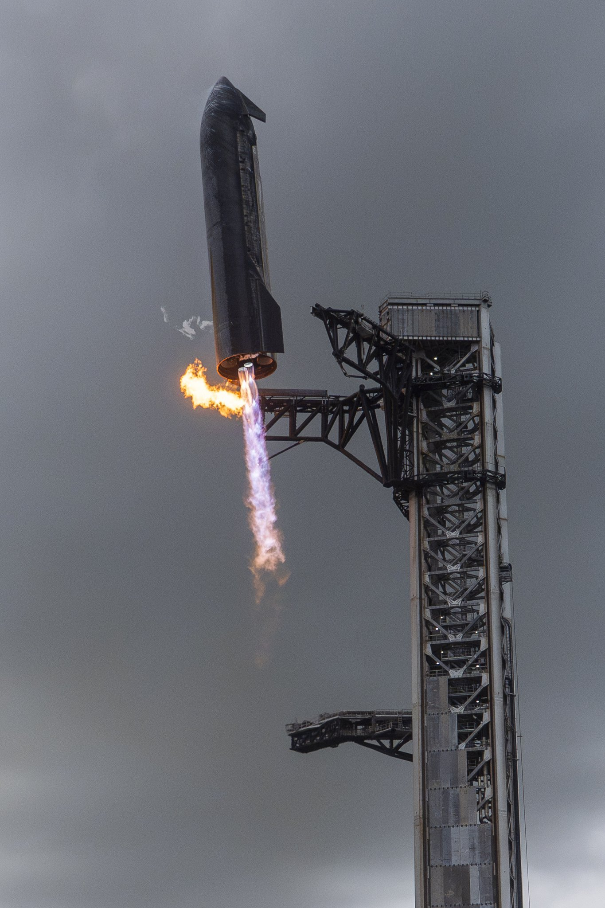
Flight 15 · Ship 42 · Starbase, Texas · 14 November 2026
The ship had been in orbit for 22 hours and 33 minutes. It came back through the heat, flipped upright, and the arms closed. From the first landing engine to the catch was 18 seconds.
The ship is 52 metres tall and 9 metres across. The stack it left on, booster included, is 124 metres. Set your height. The drawings below use that, and the photographs are the real ones.
Things you already know
Move sideways along the row. Your height is the one in the header, and everything else is drawn to that same scale. The ground stays at the bottom, so the row does not scroll up and down. The height buttons change how much of that scale fits in the frame. Up close, a bicycle is large and the tower runs out the top. At tower height, you can see from the ground to the top. The ship and the tower are the published heights. The other pictures are illustrations of things you see outside: a bicycle, a door, a hoop, a car, a bus, a container, a whale, the airplane most people actually board. A football pitch is 105 m between the goals, a little shorter than Saturn V is tall.
The figure under each picture is the length it is scaled to. A 40-foot container is 2.6 m tall and a 737-800’s tail is 12.5 m; those drawings keep their own proportions instead of being squashed to both numbers. The photographs of the catch are further down.
One instrument
The gold figure is you. Zoom out until the whole tower fits. Zoom in until a heat tile is the size of a plate in your hands. The 9 metre body is wide enough that, up close, it stops being a rocket and becomes a wall.
Nine metres
People describe the height and miss the width. The published diameter is 9 metres. A 747 cabin is 6.1 metres wide. You can stand three city buses side by side in the circle and still have room at the edges.
The people
Ship 42 carried satellites. SpaceX describes a crew ship of this same size for up to 100 people, with cabins, a common room, and a viewing gallery. No seat map has been published. The next page puts ordinary airline seats into the published volume, then lets you go from the whole ship down to one harness and the wall beside it.
The heat shield
The shield in the photographs is black. The colors here are only so each plate stays a separate object. SpaceX has described about 18,000 hexagonal tiles on the windward side. A photo measurement puts a standard tile at 24.3 cm across the flats. Ship 42 flew a newer curved tile over much of that shield. This model is the flat hexagon at that measured face. Drag it.
Drag the tile to turn it.
Each colored hex is one tile. Click one to lift it off the steel.
Elon Musk’s reason for the shape is that a hexagon leaves no straight path for hot gas to accelerate through the gaps. Square tiles would give the plasma long straight seams.
The ship comes home belly-first. The tiles take heat that would otherwise reach the steel. Ahead of this flight SpaceX said the shield had to be robust enough to return the ship to Starbase, and that teams had been iterating on it for this catch.
On the evening of 14 November, Musk posted video from under Ship 42 and wrote “Ship 42 looks great.” The shield in that clip is the same black surface you see between the arms in the catch pictures.
The length
This column is the tower at true scale. Your figure stays on the screen. Scroll inside the frame. The gold line is your feet.
The catch itself
Re-entry had already lasted about twenty minutes. The ship was subsonic. Then three engines lit, the vehicle flipped upright, and the engines stepped down to one. The arms closed. Press play and let the clock run. It is not sped up. The picture steps through 37 frames of SpaceX’s approach clip, in the order they were filmed. That clip runs about half a minute, so the frames walk the whole approach while these 18 seconds run.
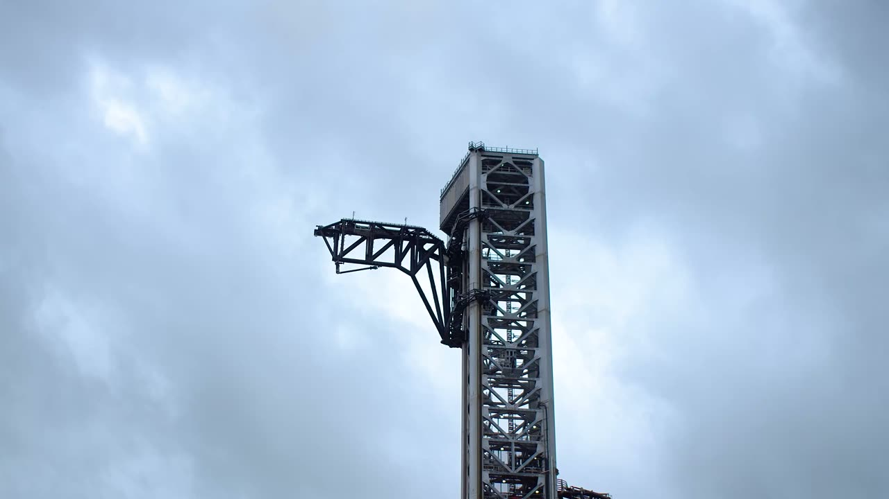
The landing burn starts. The ship is still moving, and it is about to rotate from a belly-down fall into a vertical hover.
Under the rocket
On 13 November the flame diverter opened before liftoff and threw water up into 33 Raptors. The engines turned that water into the cloud in the photograph. The sketch is that moment from the side: the steel plate under the bells, the water rising into them, then the engines lighting. The first flight, on 20 April 2023, did not have this system. The concrete under the rocket was torn out. The shake you see in distant cameras is what the water did not absorb.
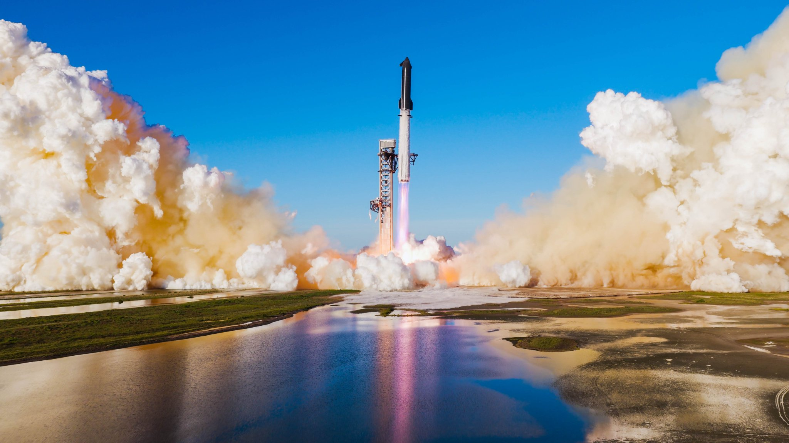
A cutaway sketch, not a photograph. Seven bells stand in for the 33, each drawn at 1.3 m across and 2.9 m tall on the 9 m body. You stand on the deck beside them. The plate is drawn thick so the holes stay visible. Its real thickness, and the number of holes, are not what this picture measures.
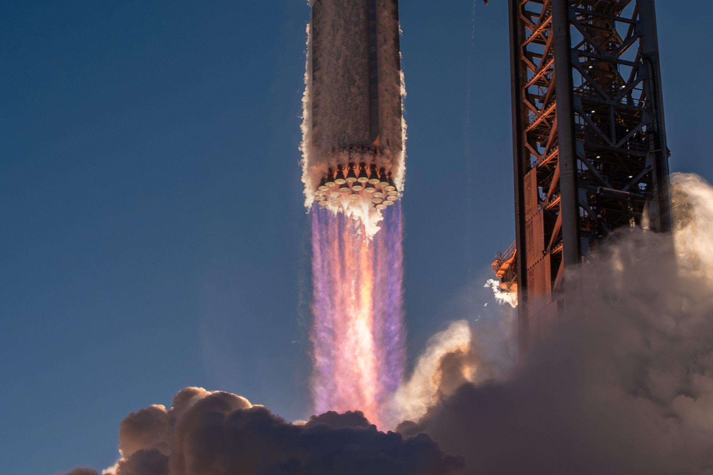
From the accounts
These are their pictures and clips from X, kept in this folder so the page still works when a link rots. The words under each one are the words on the post. The photographs remain theirs.
SpaceX · 14 November 2026 · 3:21 pm Central
Mechazilla catches Starship! Congratulations to the entire SpaceX team on this incredible achievement!
SpaceX · 16 November 2026
Starship landing burn on final approach for catch
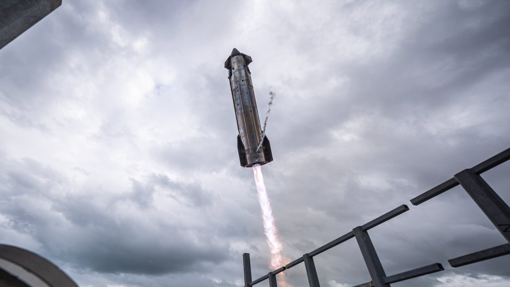
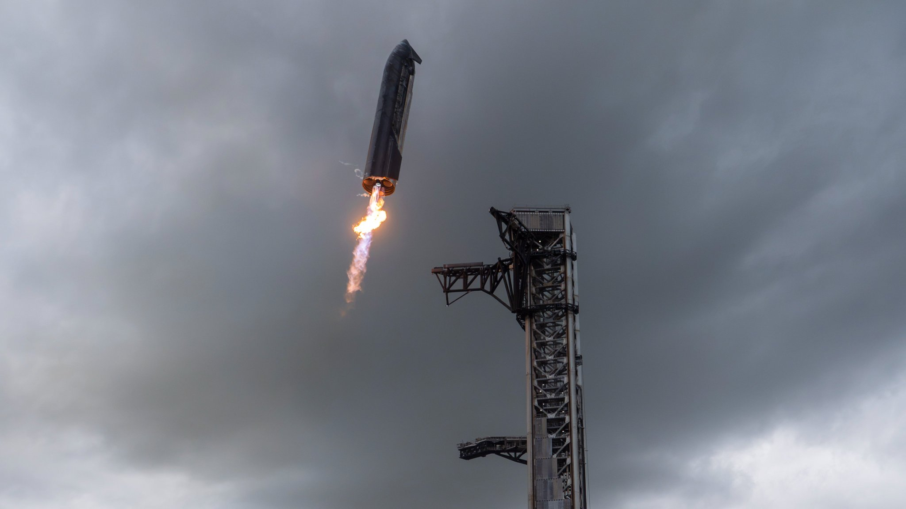
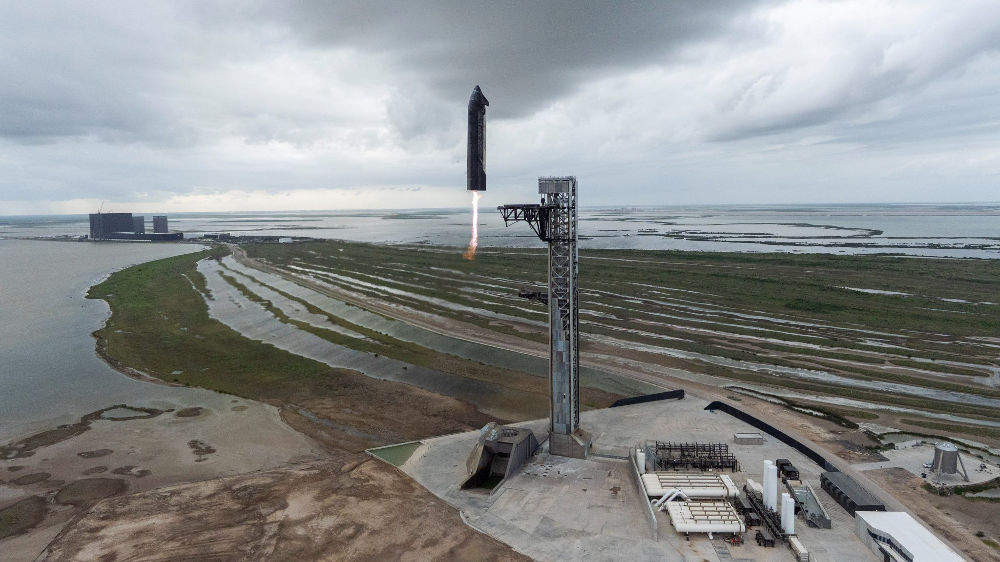
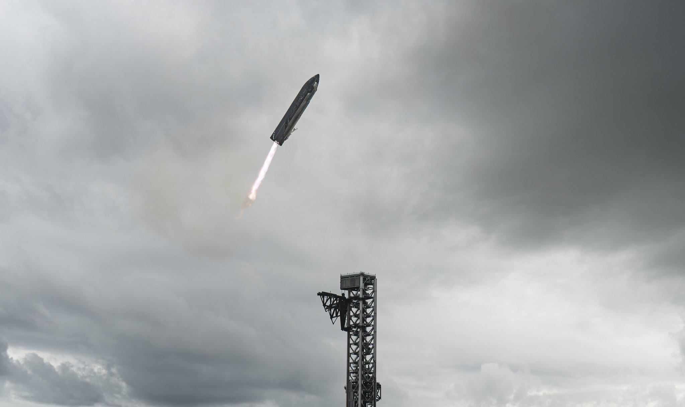
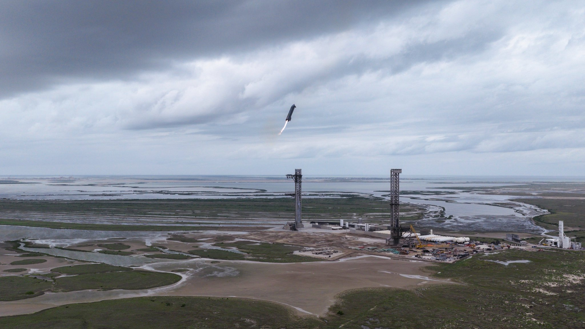
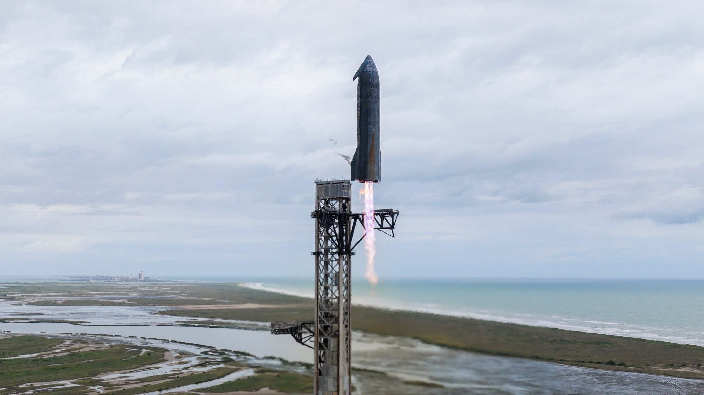
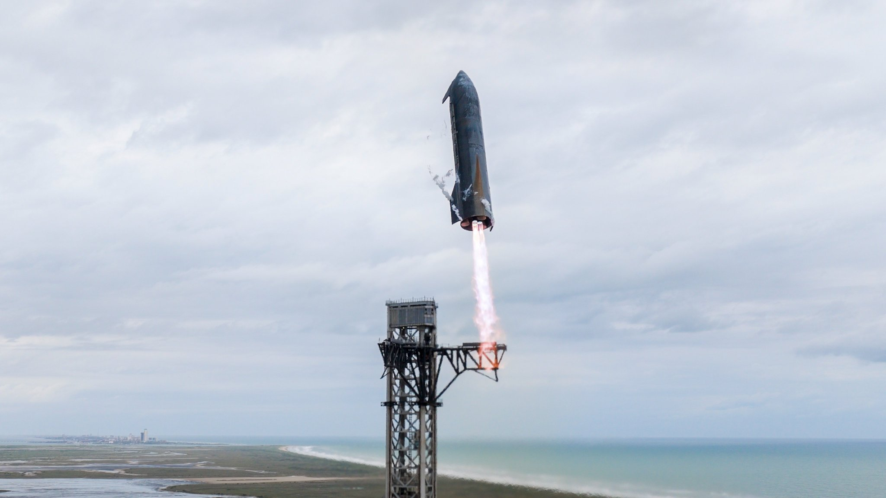
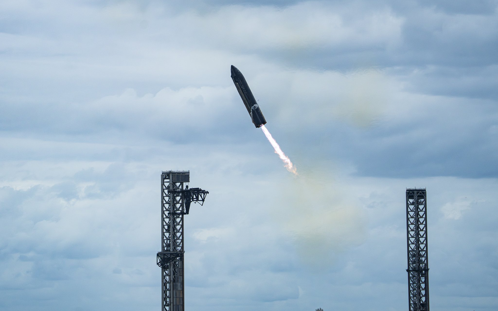
SpaceX · 16 November 2026
Starship 42 coming in for catch
The post carried four clips. This is one of them.
SpaceX · 16 November 2026 · and Elon Musk the same day
Views from Mechazilla of the first ever Starship catch
Musk, quoting that post: “View of Starship landing from the tower.”
The railings in the foreground are the human-sized part. The ship hanging beside them is 52 metres.
Elon Musk · 14 November 2026 · 4:36 pm and 5:25 pm Central
SpaceX · 13 November 2026
Liftoff of Starship Flight 15
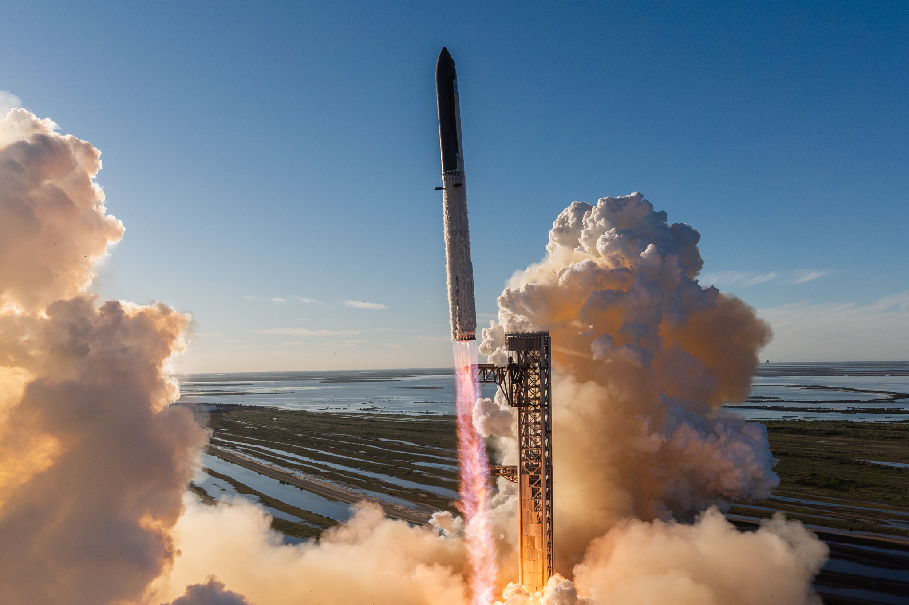
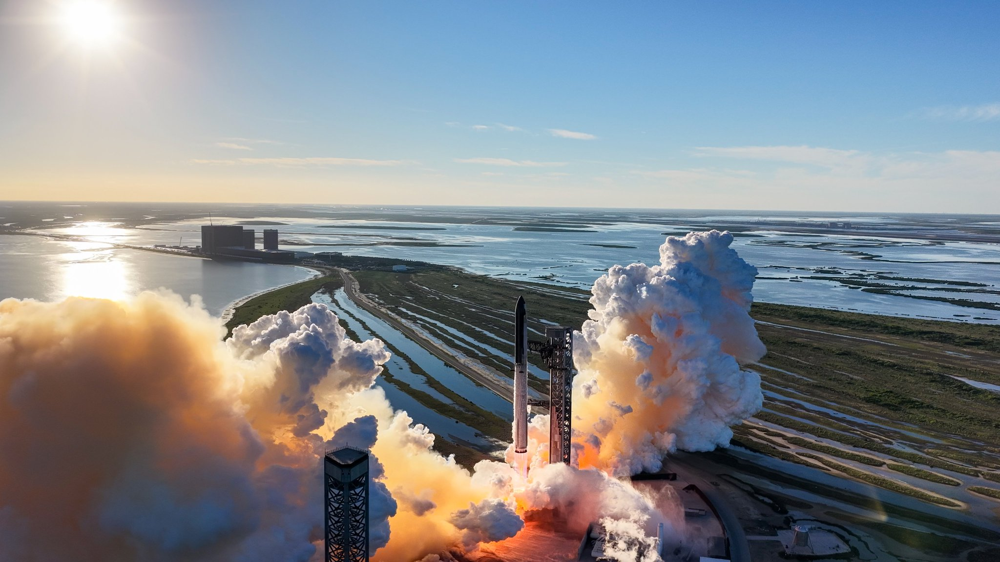
x.com/SpaceX/status/2121437515819159871
The plan was to catch the booster as well. Booster 22 was diverted and broke up over the Gulf. The ship catch the next afternoon was the first time an orbital upper stage was caught.
SpaceX · 10 November 2026
Super Heavy moved to the launch pad at Starbase. Booster 22 is the first Super Heavy V3 booster planned to return to the launch site for catch and was used for final catch testing upon arrival, including a suspended squeeze test at catch height.
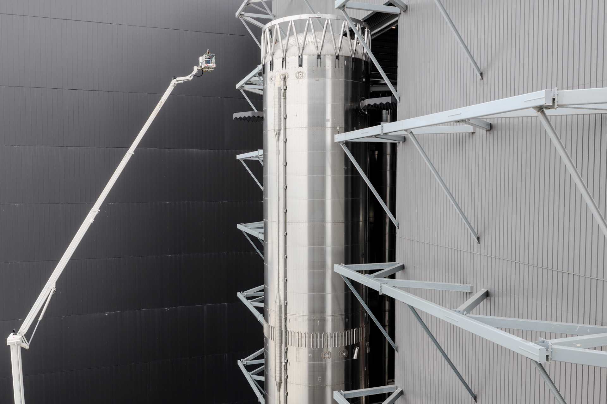
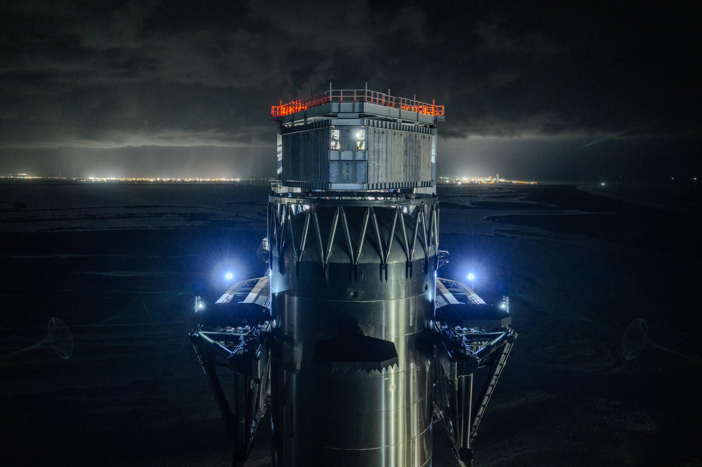
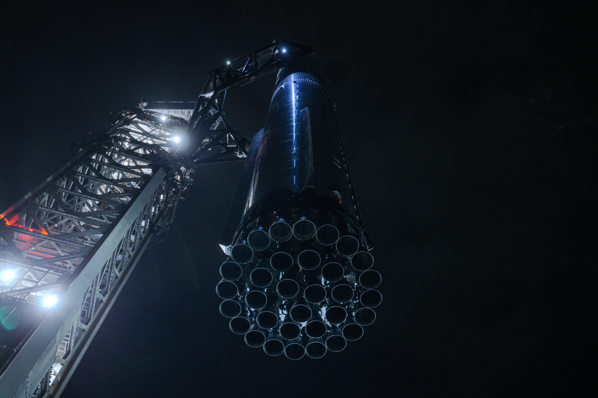
What is measured
Wikipedia, Starship flight 15, cross-checked with the SpaceX posts above.
Comparisons use a Boeing 747-8 length of 76.3 m and a cabin width of 6.1 m, a Saturn V of 110.6 m by 10.1 m with about 7.6 million pounds of first-stage thrust and a liftoff mass near 2,950 tonnes, and a Statue of Liberty of 93 m from the ground to the torch. An Olympic pool is taken as 50 by 25 by 2 metres, 2,500 tonnes of water.